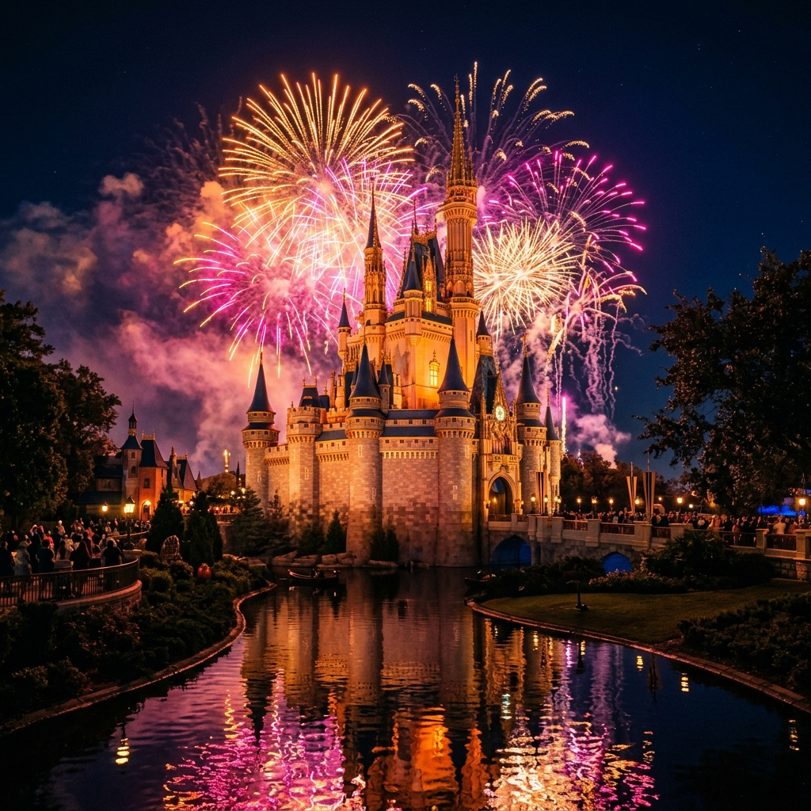
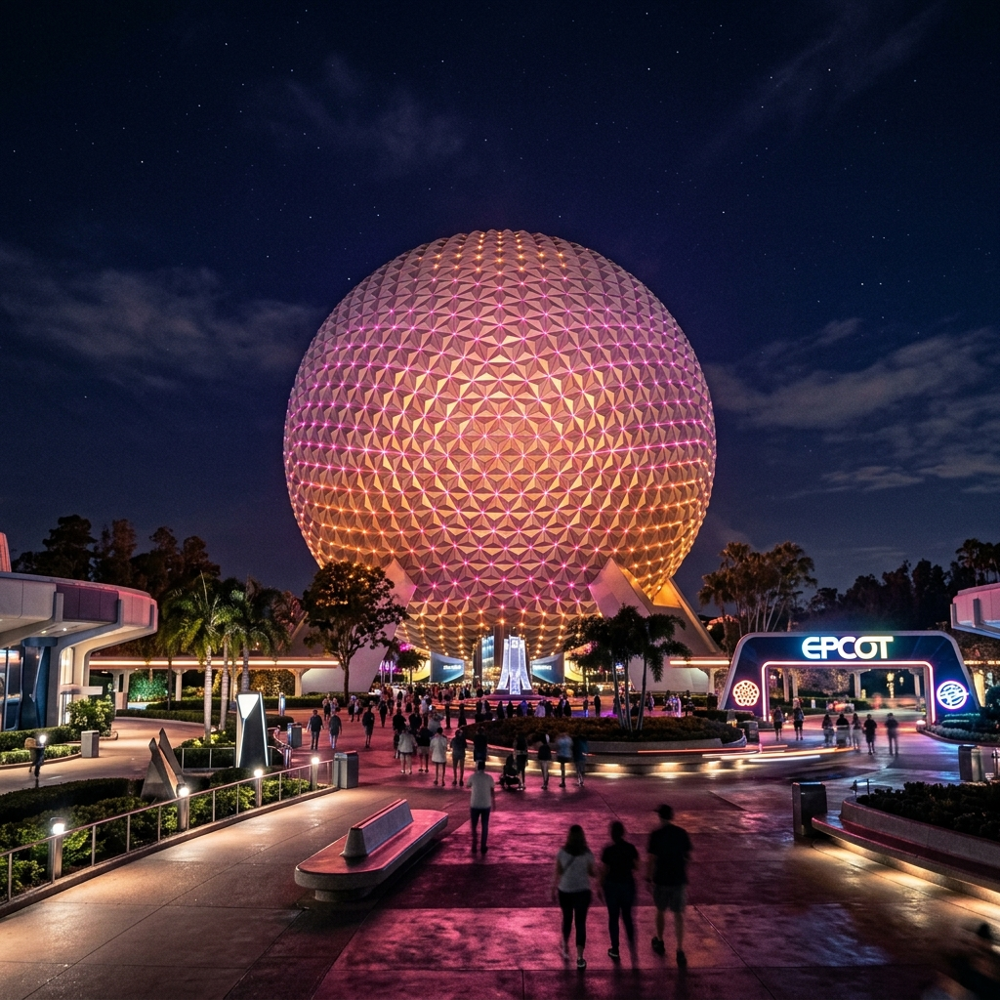
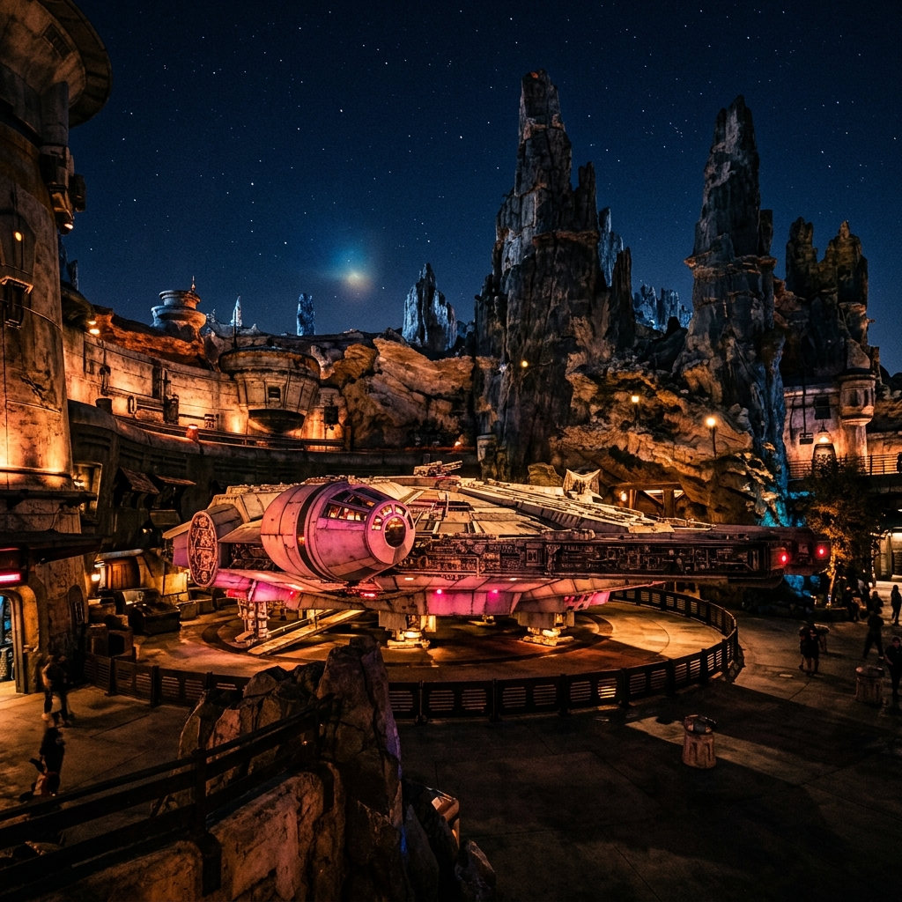

The Boardwalk & Room Tour
The journey started at baggage claim 3 in Orlando International Airport, coordinating the pickup and scooter logistics. We checked into our home base: an accessible room at Disney’s All Star Music Resort.
Before unpacking, we took a sunset roll from Hollywood Studios to the Boardwalk. Tectonic wood decks, evening breezes, and watching the neon skyline light up served as our induction into park life.
Magic Kingdom — Speed & Sugar

Main Street at park open is a dense grid of warm sugar, heavy humidity, and high ambient decibels. Rolling through the crowd, we checked off our targets with mechanical precision:
- Peter Pan's Flight — Flying over London in the dark, classic storytelling.
- Pirates of the Caribbean — Sailing caverns of bromine and old wood.
- Carousel of Progress — A cool 20 minutes in the rotating theater listening to Walt’s classic sermon.
- TRON Lightcycle / Run — Launching under the massive grid of blue neon.
- TTA PeopleMover — Cruising the rafters of Space Mountain in the afternoon breeze.
We fueled the run with two Magic Kingdom staples: corn dog nuggets and a warm Cheshire Cattail.
The Silent Off-Day
A quiet mid-week break. No wearable audio logs, no timelines, no structured plans. Just pool water, accessible room comfort, and a complete recharge of both human and mechanical batteries. Rest is part of the engineering.
EPCOT — The Cosmic Rewind

EPCOT always feels like an optimistic editorial on human potential. Our primary target: Guardians of the Galaxy: Cosmic Rewind.
In the weeks leading up to this, back at the house during Mother's Day dinner, I admitted I was genuinely nervous—if not flat-out scared—about this ride. The reverse launch and the free-spinning coaches are a serious physical challenge. But stepping into the Wonders of Xandar pavilion and boarding the Starjumper, the apprehension vanished.
The teleportation pre-show went sideways when the cosmic generator was reported 'stolen,' and then came the launch: a blur of kinetic acceleration, spinning backward through the cosmos under the neon-pink gaze of a giant celestial while classic pop echoed in our ears. I handled the forces perfectly. It was an absolute triumph.
Afterward, we hit Mission: SPACE (Orange Mission), pulling high G-forces in the centrifuge, before taking a relaxing walk through the interactive Moana Journey of Water and taking Remy's trackless sprint through the kitchen.
The Retrospective Flight

We checked out of All Star Music, packed the checked bag, loaded the scooter, and took a rideshare to MCO. Boarding our 1:05 PM Breeze Airways flight back to RDU, we settled in.
As the plane climbed over the Florida coastline, we did a retrospective on our absolute favorite rides of the entire trip. The verdict was unanimous:
- Guardians of the Galaxy: Cosmic Rewind (The nerves were real, but the payoff was legendary)
- TRON Lightcycle / Run (Pure, uncluttered kinetic speed)
- Star Tours (A timeless, simulator-based classic)
We touched down in Raleigh-Durham in the late afternoon. Trip complete. Synced and recorded.